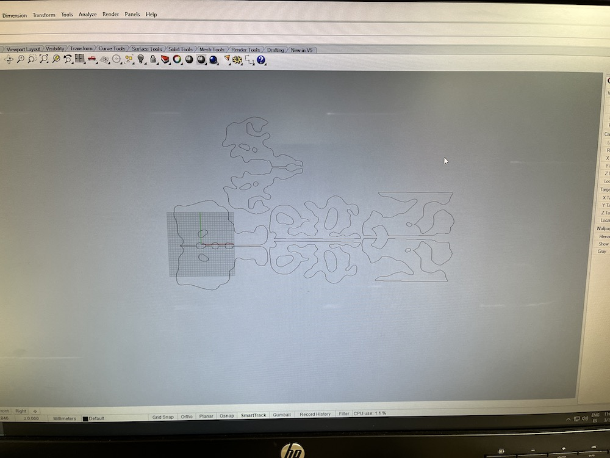
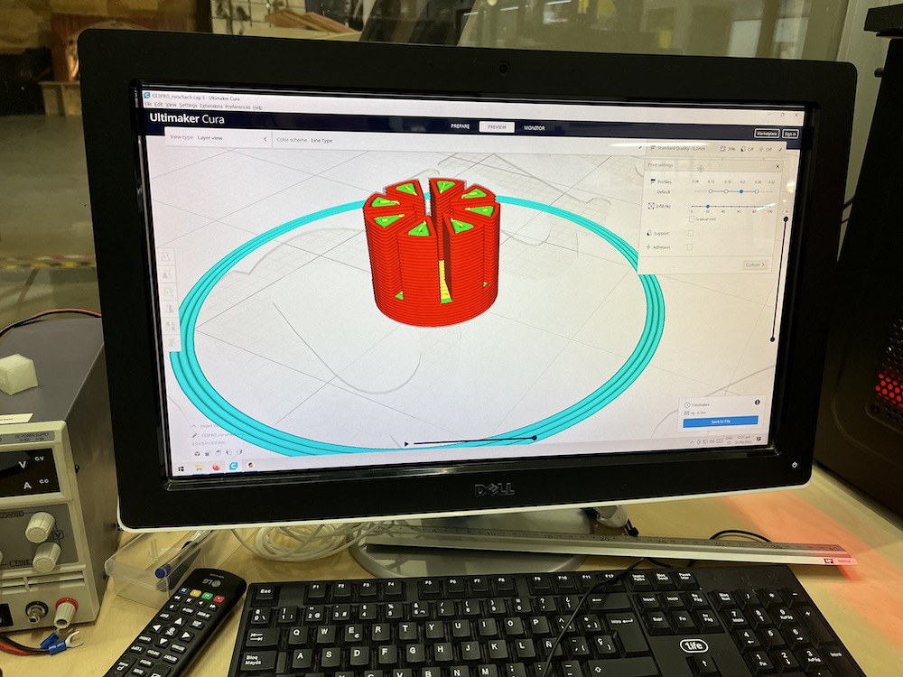
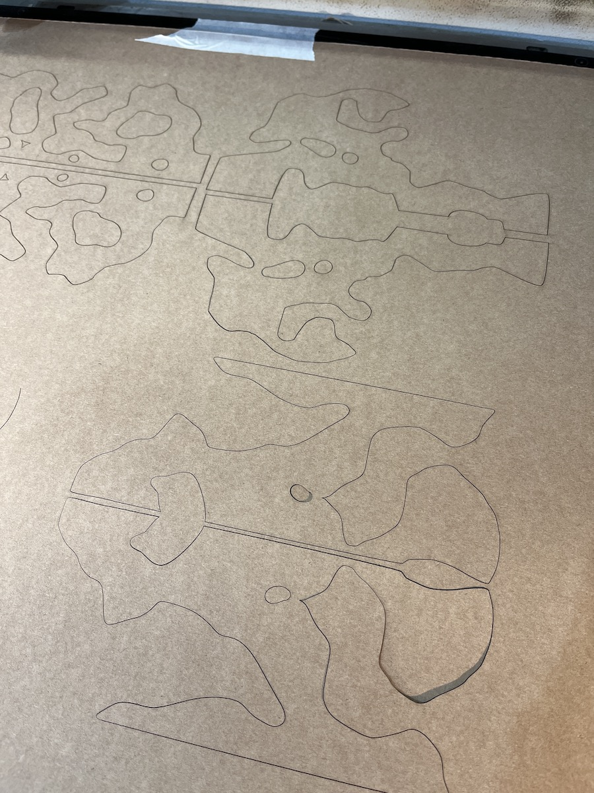
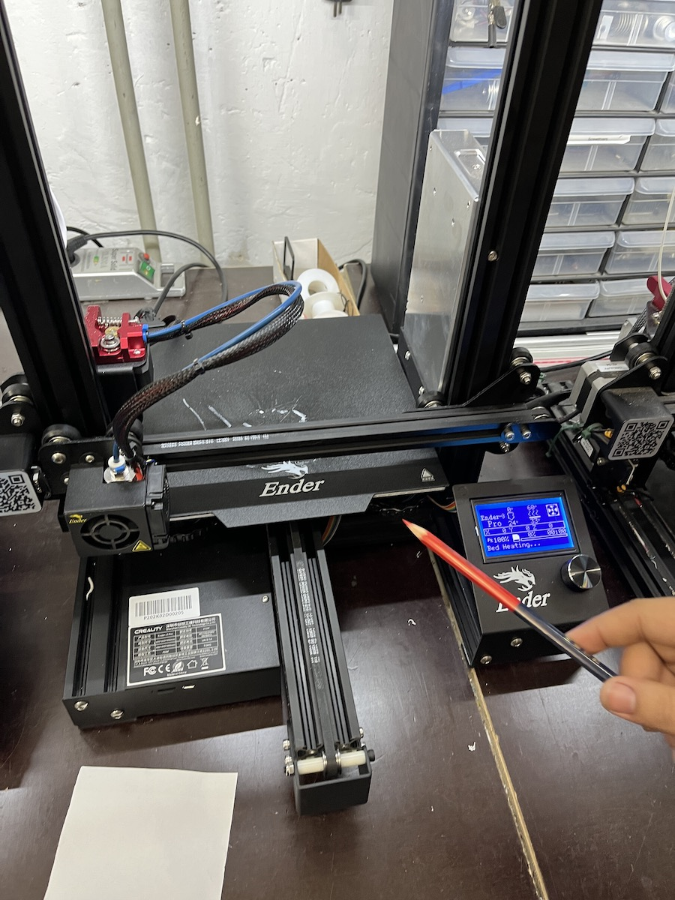
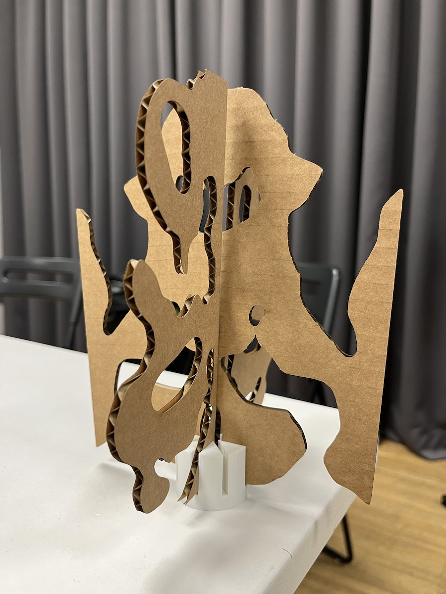
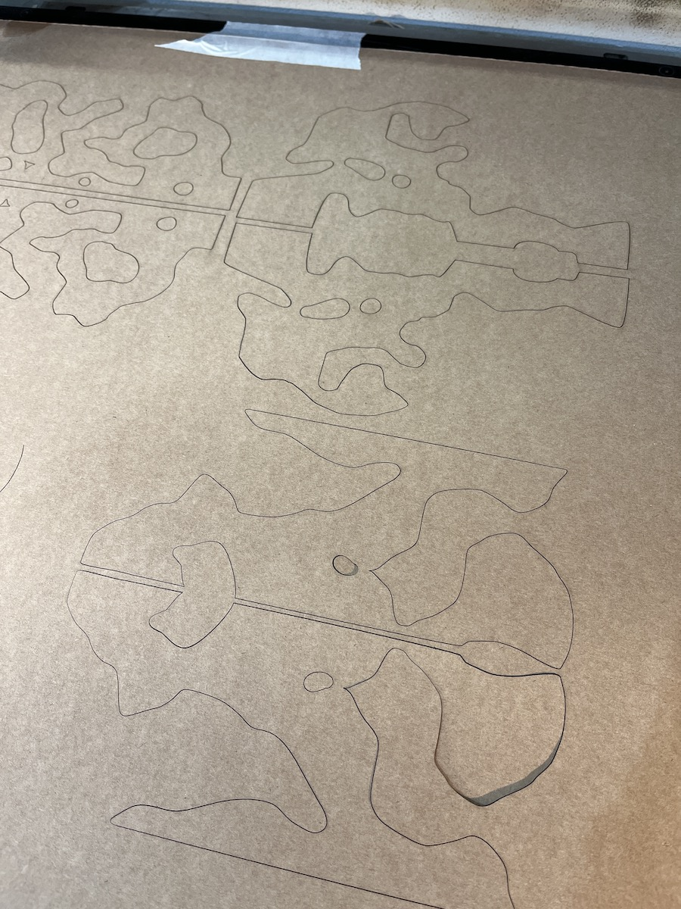
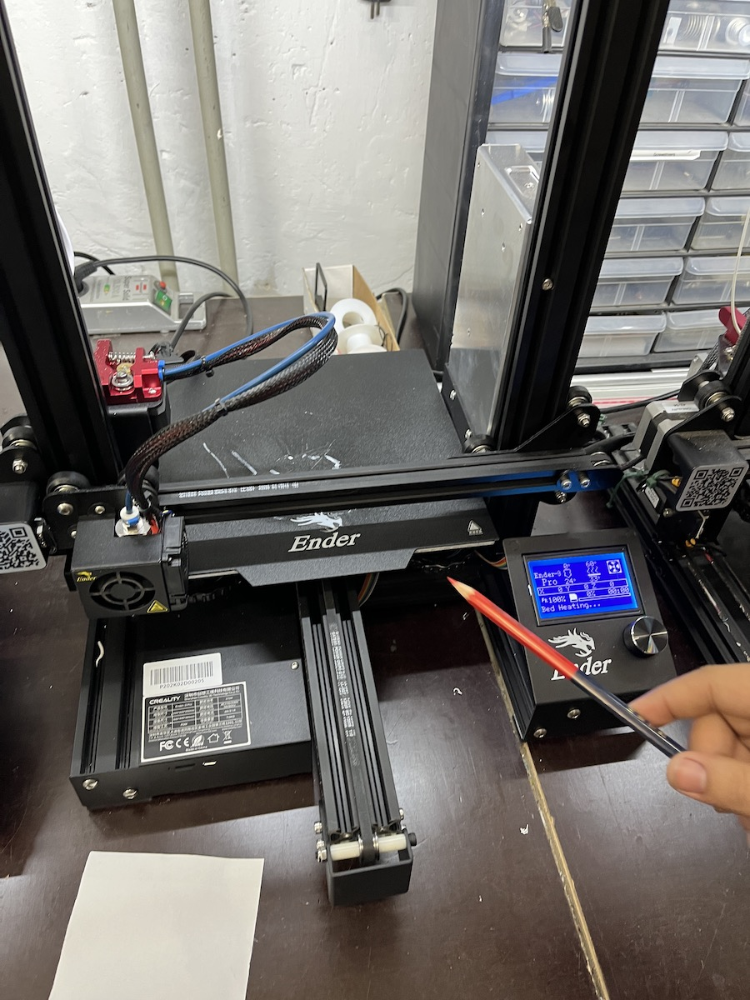
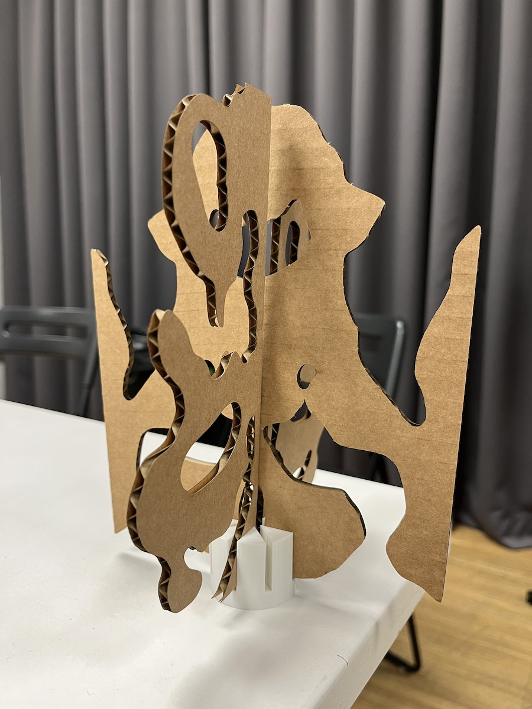

We started the week with another session of Making Sense & Meaning, this time with guest speakers Beno Juarez, Li Yu, Sename Koffi, and Sudebi Thakurata. We talked about Design from various perspectives, confronting Western and non-Western ideologies and widening our perspective towards indegenous practices, fab labs, first perspective design and more. It was nice to hear from people all across the world, offering new views in their practice.
Then, we had another Atlas of weak signals seminar, but I was unable to attend. I was told that the professor spoke about the history of the internet, Web 1.0, Web 2.0 and Web 3.0, surveillance capitalism etc. I’m lucky that I am familiar with these topics because we had dedicated classes about them in my Bachelor, but I would have loved to hear this professor’s perspective about it all.
On Tuesday, I started the day in the fab lab with a laser cut + 3d print morning. I like coming in the mornings because it’s much calmer and quieter, and there are less delays and problems that accumulate as opposed to later in the day.


 





Later, I had my studio review with Mariana. She gave me some interesting advice about my project ideas and guidance regarding where I should bring my idea with the Rorschach tests. From her I got inspired to create an event around it named "the shadow of the collective", in which we could talk about events which affect our individual self. I liked the idea of exploring different scales of emotions and fears, so I will refine the concept better in my design space and come up with an idea for a design intervention sometime next week.
I took notes of everything she said:
Mariana also gave me some criticism in regards to my Artificial Constellations project, telling me not to dive in too quickly by choosing a location for the event when I haven't yet thought about the impact it could have in participants. She told me to refine and elaborate the concept more, veering the project away from hopelessness and guilt, and instead more towards empowerment.
In my free time, I also made some graphics for the Artificial Constellations project:
video of the "Artificial Northern Lights" effect I made in TouchDesigner.
On Wednesday, we had our Fabacademy course on Electronics. I really liked the segment on using Grasshopper with the Kinect. You can find the full page on this activity here.
Thursday, we had a follow up Emergent Technologies with Guillem and guest Lorenzo Patuzzo. He brought us interesting insight on his participation in building Ethereum and Decentralized Autonomous Organisations, with a storytelling approach. It was strange not to see a formal presentation and at times I feel like he spoke very vaguely and metaphorically, so I would have appreciated more clear terms when speaking about cryptocurrency. I understand however that the level was brought down to make sure everybody could understand, but I think it got very abstract sometimes.
The following day, I did some more laser cutting + 3d printing for my design intervention. The full documentation can be found on my Design Studio page, here.
video of the "Artificial Northern Lights" effect I made in TouchDesigner.